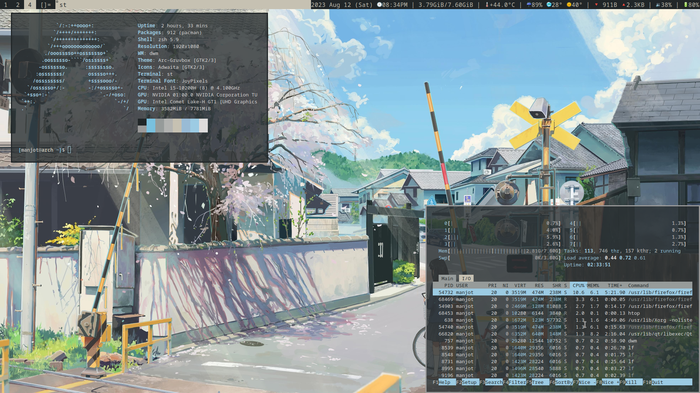
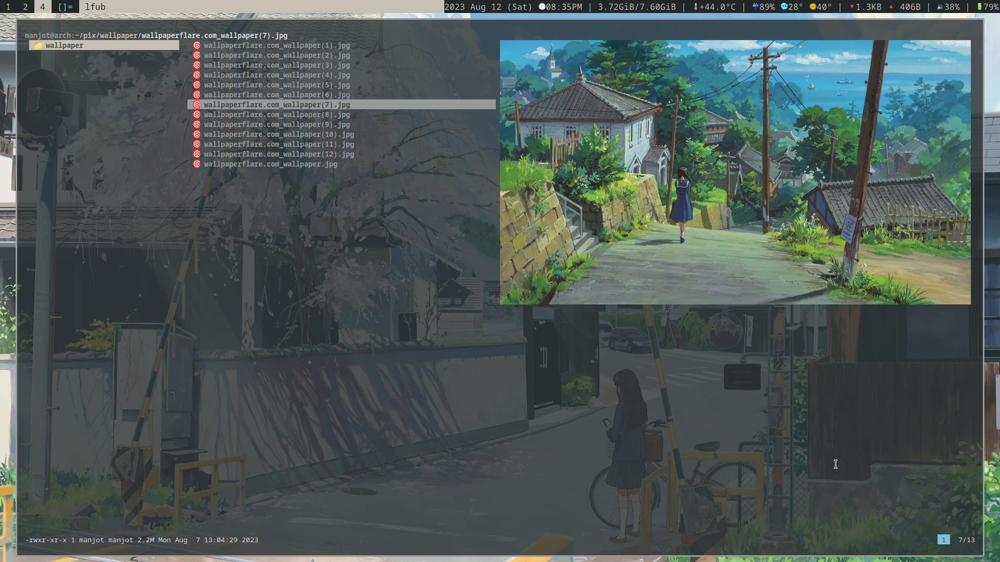
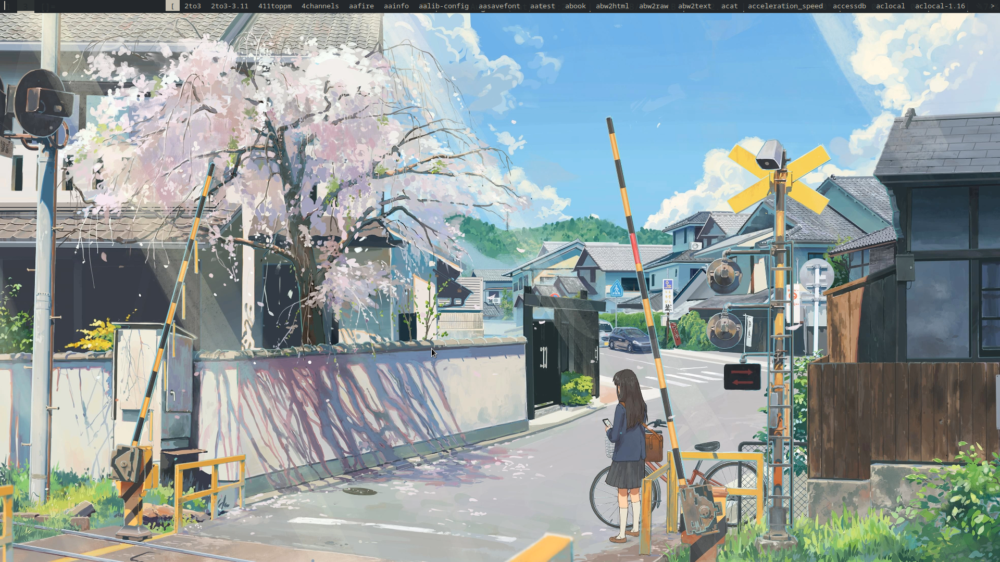
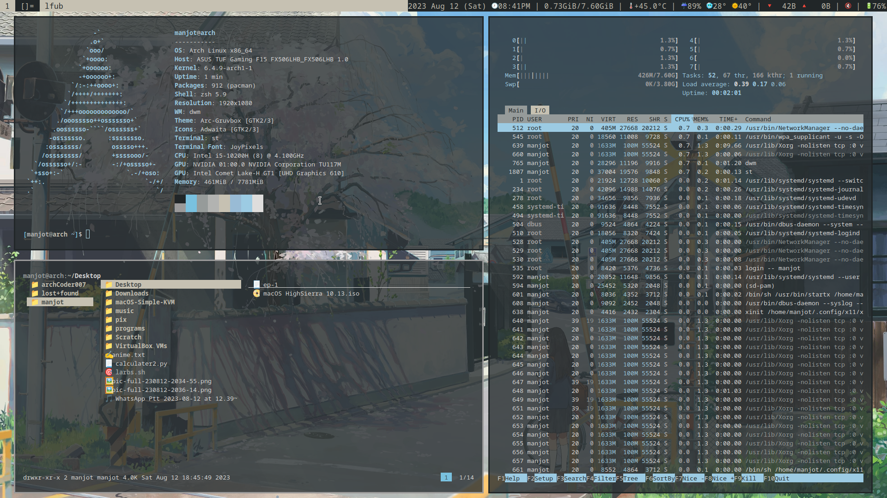

INTRODUCTION
Hello, I am archCoder007. A coder for fun. I love tu consomise different window manager and I like to. journey in the coding world has been deeply intertwined with my love for Linux. I'm a proud user of arch Linux, which resonates with my desire for customization and control over my environment. You'll often find me exploring the depths of the command line and experimenting with various configurations to create the perfect setup. One of my favorite tools in my coding journey is the Dynamic Window Manager (DWM). I've tailored my workspace to perfection using DWM, and I've shared my configuration on GitHub for fellow enthusiasts. Feel free to check it out!. When I'm not typing away at my keyboard, you might find me exploring the great outdoors, enjoying a cup of coffee, or delving into a captivating science fiction novel. Life is an adventure, and coding is my compass. Join me in this fascinating journey of coding, creativity, and exploration!
System
Dynamic Window Manager(DWM): This my dwm customization and including patches. If you are talking about the Dynamic Window Manager, it's a lightweight tiling window manager for X11. It's known for its simplicity and efficiency, using a manual tiling approach where windows are arranged in a non-overlapping layout. It's highly customizable through editing its source code, making it a favorite among Linux enthusiasts who prefer a more hands-on window management experience. In the context of Windows operating systems, Desktop Window Manager is a compositing window manager that's responsible for enabling visual effects like transparent windows, window animations, and 3D effects. It helps improve the overall user experience and provides a more modern and visually appealing interface. Other Context: If you're referring to something else with the acronym "DWM," please provide additional information so I can accurately provide you with relevant information. Feel free to provide more details, and I'll be glad to assist you further!
St Terminal: The "st" terminal, short for "Simple Terminal," is a minimalist and lightweight terminal emulator for X11, typically used in Unix-like operating systems. It's part of the suckless.org project, which aims to create simple and efficient software tools. st is known for its simplicity, speed, and adherence to the Unix philosophy of "do one thing well." It offers basic terminal functionality, such as displaying text, executing commands, and handling input/output. Its primary focus is on being fast and efficient, which makes it a favorite among users who prefer a lightweight and customizable terminal emulator. As of my last knowledge update in September 2021, st doesn't natively support displaying images within the terminal. It's designed to handle text-based input and output. However, there are some patches and modifications available from the open-source community that allow st to support image display through various workarounds. These patches are not officially part of the mainline st project but can be integrated if you're comfortable with modifying the source code. It's worth noting that displaying images in a terminal goes beyond the terminal's original design intent, and there are other terminal emulators that are better suited for this purpose. If you're interested in working with terminals that can handle images, you might want to explore other terminal emulators like Alacritty, Kitty, or URxvt, which have built-in or plugin-based support for image rendering within the terminal window. Keep in mind that the landscape of software tools can change, so it's always a good idea to check for the latest developments if you're looking for specific features.
dmenu is a dynamic menu for X11, designed as part of the suckless.org project which focuses on creating lightweight and minimalistic software tools. As its name implies, dmenu provides a simple and efficient way to display and select options from a list, making it particularly useful for launching applications, running commands, or navigating through various choices. Key features of dmenu include:
1.Dynamic Filtering:dmenu dynamically filters the list of options as you type, making it quick and easy to find and select the desired item.
2.Keyboard-Centric: dmenu is designed to be used primarily with the keyboard, allowing for fast navigation and selection without requiring extensive mouse usage.
3.Customizable:While dmenu's default appearance is quite basic, it's highly customizable through the application of patches and modifications. Users can adjust colors, fonts, and behavior to suit their preferences
4.Integration with Scripts:dmenu's simplicity makes it a popular choice for scripting and automation. It's often used in conjunction with scripts to provide interactive menus for various tasks.
5.Extensibility:Because of its open-source nature, developers in the community have created patches that add extra functionality to dmenu, such as support for fuzzy matching, icons, and more 
Installation
Who to install:To install my build of DWM go to my github https://github.com/archcoder007there will be four repo clone or downloads four of them and install them using
$sudo make clean install this is only for arch linux
Auto Install
To auto install there is a auto install script on my github clone it give executable permiction if needed (if needed) run file by sudo
Social media
Contact: mssondgit459@gmail.com
GitHub: https://github.com/archcoder007
instagram: https://instagram.com/archcoder007